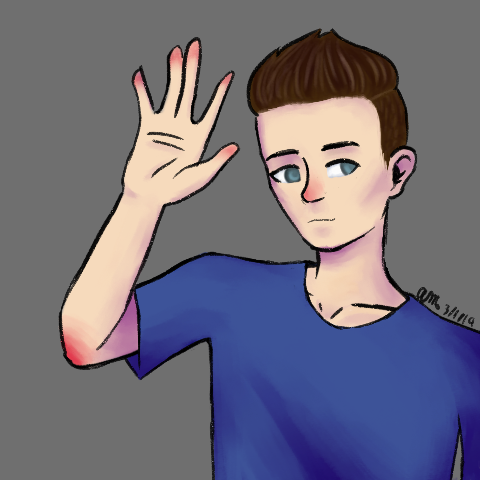
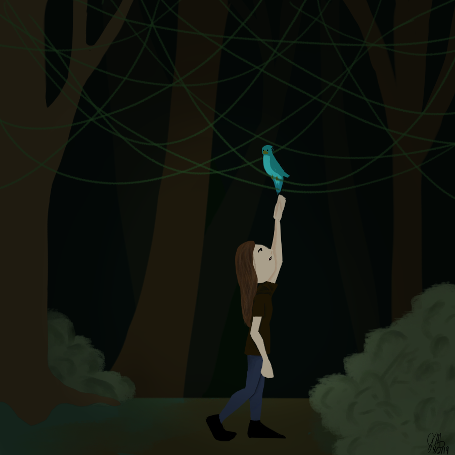

As time went on, the group I had on that app slowly went away and I found myself drawing a lot less fanart and more original art. Most of the art that I did during this time was traditional because I was in Highschool and spent most of my free time working on my art class assignments or playing Dungeons and Dragons. I was able to learn a lot more about composition through those classes but I used digital art as my guilty pleasure art. I drew character designs in color and didnt finish most of my personal projects.
 